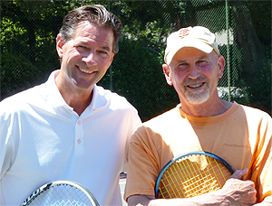

Previous: The Art of Winning | 🏠 Mental Game Home | Next: The Dangers of Strong Emotion
The Best Tip Ever
Comprehensive unified tennis knowledge base — Fundamentals, Stroke Analysis, Reference Library, and more
The Best Tip Ever
Keith Hayes

Keith with Bill Hager: idol, mentor, partner, friend.
When I was a kid I used to watch in awe as Bill Hager, then in his early thirties, moved effortlessly around the court and beat the best players at my local courts, Boyle Park in Mill Valley, California. Aside from his recreational triumphs, Bill did well in local tournaments, appearing in many finals and often winning first place.
I admired Bill’s prodigious talent, but I admired him even more because he was nice to me. He took the time to play with me, and he always gave me a thoughtful answer when I asked him about the game.
Today, I’m 47 and Bill is in his sixties, but he’s still one of my favorite tennis partners. These days, I teach tennis professionally. I’ve studied the game extensively, but I still look forward to picking Bill’s brain. For example, Bill is a great volleyer, so I once asked him about his philosophy at the net. What goes through his head when he hits a volley?
“I imagine that I’m trying to run up and eat the ball,” Bill answered. “I want to get my face right up to it and be aggressive.” It was a wonderful answer, and an analogy I’d never heard in over thirty-five years of playing.
You can’t be a good volleyer unless you move quickly to the ball, and you certainly can’t eat the ball out of mid-air unless you charge up to it like a hungry lion. Meanwhile, the closer you get to a volley, the stronger you can hit it. This was vintage Bill—one simple tip covered just about everything.
Move to the volley quickly and eat the ball.
Another time, during a doubles tournament I played with Bill, I struggled with my serve. “Just spin the first one in,” Bill said. “A slow first serve is better then a second serve.”
I had never heard it put that way, but, again, Bill’s tip made perfect sense. Once I missed my first serve, I was putting double pressure on myself. Of course, I felt initial pressure to make the second serve, but to make matters worse, my salivating opponent would creep in closer for the second ball and apply even more pressure. Ever since then, I’ve worked hard to make my first serve more solid and consistent.
I love Bill’s tips so much that I finally rolled the dice a few years back and asked him the big question. If he could come up with one tennis tip, something that has stayed with him over the years and made the biggest difference in his game—his “best tip ever”—what would it be? Bill thought for a moment and then answered confidently, “Play like you practice, and practice like you play.”
I paused. Play like you practice, and practice like you play. It was an old expression—arguably even a cliché—that I had heard a million times, but it somehow took on a different meaning when Bill Hager said it. In fact, Bill gave the old axiom new and instant credibility.
Bill taught me to spin the first serve in when I was missing.
Play like you practice, and practice like you play. I thought about Bill, and how he never fools around during practice. A serious athlete, Bill played Division I soccer in college and took up tennis only as an adult. I realized that whenever we hit, Bill suggested we do drills.
If we’re not playing a set, he’ll invariably ask me to hit cross-court or down-the-line forehands or backhands, or perhaps two volleys and then one overhead—anything but random hitting.
Another drill we like is playing serve and volley points using only the doubles diagonals. Whenever I finish practicing with Bill, I’m usually more worn out than I am after I’ve practiced with guys my own age and younger.
Come to think of it, that must be why I’ve always looked up to Bill. I’ve never known anyone who takes the game more seriously. It’s not like Bill is no fun—he just doesn’t like to waste time on the tennis court.
Play like you practice, and practice like you play. The minute Bill said it, I thought about the high school tennis team I had been coaching. If only we could adopt this rule as our mantra, how much better would we be? Over the years, I had seen the power of repetition when it came to coaching. A coach has to be clear on what he wants and then hammer it home to his players. If I was going to have a “vision,” something for which I clearly stood, this might as well be it.
Unlike my high school team, Bill and I believed in the value of drilling.
On the first day of practice, I touted my new philosophy and even distributed it to the players with our team policies. The more I though about it, the more I bought into the adage. If you want to win matches, you need to practice with the exact same urgency you exhibit during competition. You need to use the exact same strokes and execute the exact same patterns and shot selection. The more you’ve done something successfully in practice, the easier it will be to do it when it counts.
I thought about Monica Seles—in her prime, the toughest and most dominant player I’d ever seen. Like a boa constrictor, Seles never allowed opponents to breathe, regardless of the score. She was legendary for her intense practice sessions, and this explained her unrivaled intensity during competition.
Unfortunately, most players on my high school team dismissed the idea the same way I had dismissed it in high school—as debased currency. The saying had a nice ring to it, but it never really sank in. Perhaps it’s safer to say that these players, like myself at their age, failed to understand the implied message.
Practice well and you’ll play well, practice poorly and you’ll play poorly. These were the same players who attempted trick shots all day in practice, who got their jollies by blasting flame-thrower serves that never went in. These were the guys who would only work hard if I were looming right over their court, monitoring their every move.
Bill and I like to play points on the doubles diagonals.
Then again, a few players did get the message, and they were the ones who hustled in practice, who hungered for instruction, who worked on their weaknesses, and who treated every point like it mattered. They were the ones who got the most out of their ability, which is all any coach can ask of a player.
Play like you practice, and practice like you play. Who knows? Maybe you have to be a certain age—or maybe just exceptionally disciplined—to appreciate the concept.
I do know that as I’ve gotten older, I’ve grown increasingly protective of my time on the practice court. I don’t know exactly when things changed—probably once I started hitting with Bill—but at some point I discovered that I despise missing easy balls, even in practice.
I also discovered that I despise practicing with players who just want to whack the ball aimlessly. If they want to play a set, that’s fine; otherwise I’d prefer to keep a ball in play than trudge over to some remote corner to pick it up.
It’s an easy concept to grasp intellectually, but a much tougher one to apply in real life. Then again, there’s no such thing as a magic tip. I knew it when I asked Bill the question, and his answer only confirmed it.
Play like you practice, and practice like you play. It may be the best tip ever, but few of us really want to hear it.
USPTA instructor Keith Hayes attended Pepperdine University in the 1980s. There, he encountered Head Tennis Coach Allen Fox and became a counselor at his summer tennis camps, beginning a tennis teaching career - and a friendship with Allen - that has continued ever since. After Pepperdine, Keith went to work in the San Francisco Bay Area advertising and graphic design industries. Later he also became an English teacher.
As head coach of the Marin Catholic High School women's tennis team, Keith won back-to-back Division II North Coast Section titles in 2008 and 2009. When he's not teaching tennis, Keith continues to work as a freelance writer and designer. In addition to Tennisplayer.net, his stories have also appeared in TENNIS magazine.
Source: tennisplayer.net archive — The Best Tip Ever.docx (John Yandell teaching library, 2002-2022). Extracted and rendered as HTML for Tennis Future Lab.